GAME DEVELOPMENT
Where I learned systems thinking, object-oriented design, and the art of shipping.
THE ILLUSION
When I first got into game development, I didn’t have a plan. I had a belief — a slightly delusional one — that software developers were modern-day magicians. You thought of something, and with enough effort, it existed on a screen. Around 2014, that belief pushed me to stop consuming games and start trying to build one.
BREAKING THE SPELL
What I didn’t understand at the time was that games are systems, not screens. The first thing that broke that illusion for me was physics. A jump wasn’t just a jump — it was velocity, gravity, frame timing, and collision resolution all fighting each other. I didn’t even have the language for these problems yet. I just knew that something always felt off.
THE FIRST SHIP
After months of half-finished prototypes, I finally shipped my first game, Pocket Hopper. From the outside, it looked simple. Underneath, it was held together by brittle logic and hard-coded values. Seeing it live on the Play Store felt unreal. And almost immediately, uncomfortable. The controls weren’t tight. The feedback wasn’t clear. The game worked, but it didn’t flow.


 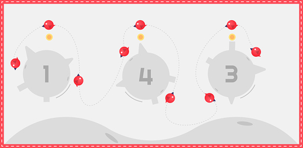
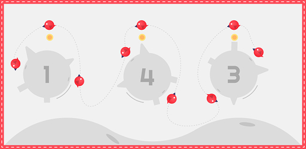
 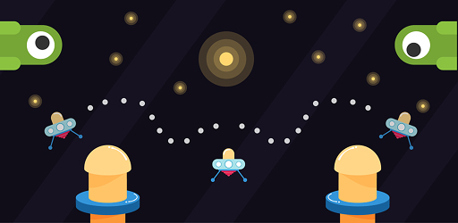
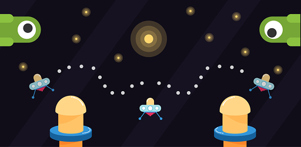
THE SHIFT TO SYSTEMS
That dissatisfaction pushed me forward. With every new project, I became more intentional. I started thinking in terms of systems instead of features — separating game state from presentation, letting animations respond to logic instead of driving it. I learned that “polish” wasn’t visual flair; it was consistency. Predictable physics. Clear hit detection.
My next published game, Exile, reflected that shift. The codebase was cleaner. The mechanics were more deliberate. It still wasn’t perfect, but it was stable — and stability is underrated when you’re building alone.
THE HIDDEN LESSONS
Behind those releases sat a long list of unfinished projects. Some collapsed under scope. Others exposed limitations in my understanding. Without realizing it, game development was shaping how I thought as an engineer. Games punish inefficiency immediately. You can’t ignore performance when every frame counts. You can’t hand-wave UX when a delay of 100 milliseconds makes something feel broken.
THE TAKEOUT
Eventually, I stepped away from making games full-time to apply those instincts elsewhere. But the habits stuck. Even now, when I build software, I think in terms of responsiveness, state, and flow. Pocket Hopper wasn’t a hit. Exile didn’t go viral. None of my games made headlines. But they taught me how real-time systems behave, how small technical decisions affect user experience, and how to build things that feel right — not just things that compile.
And once you’ve learned that through games, every other kind of software feels a little more honest.

 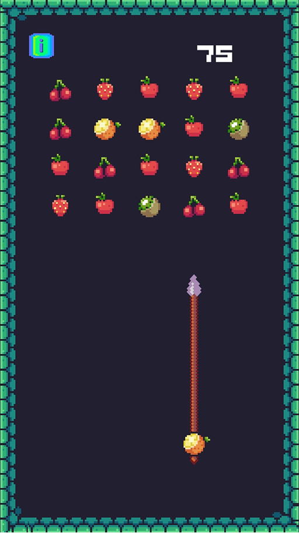
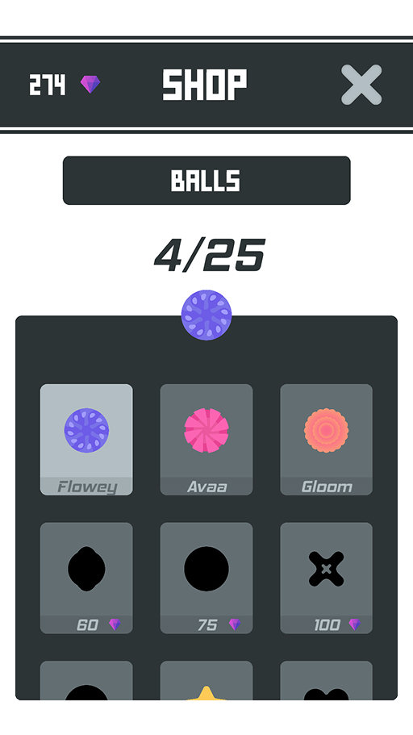
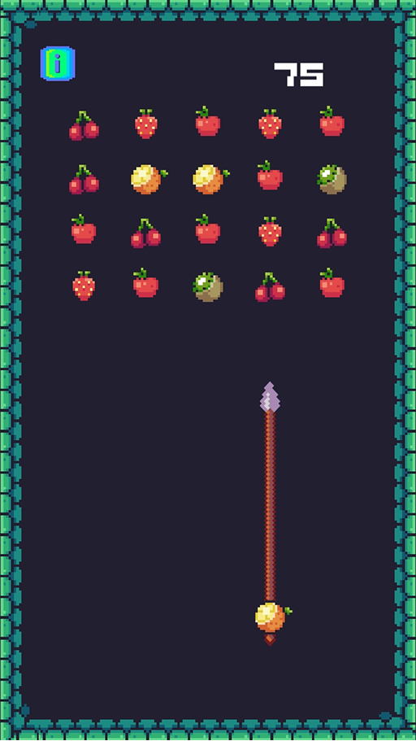
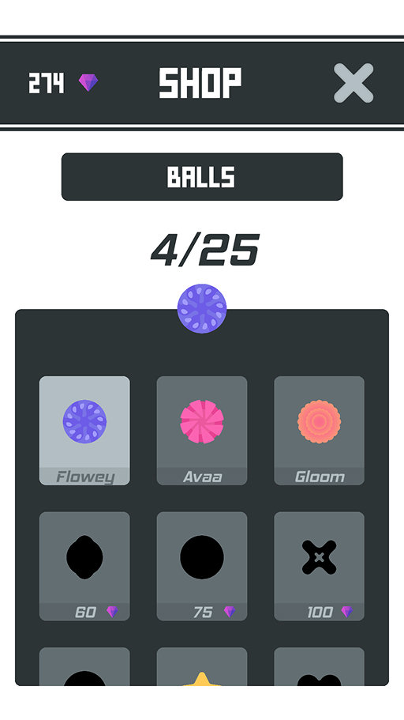
 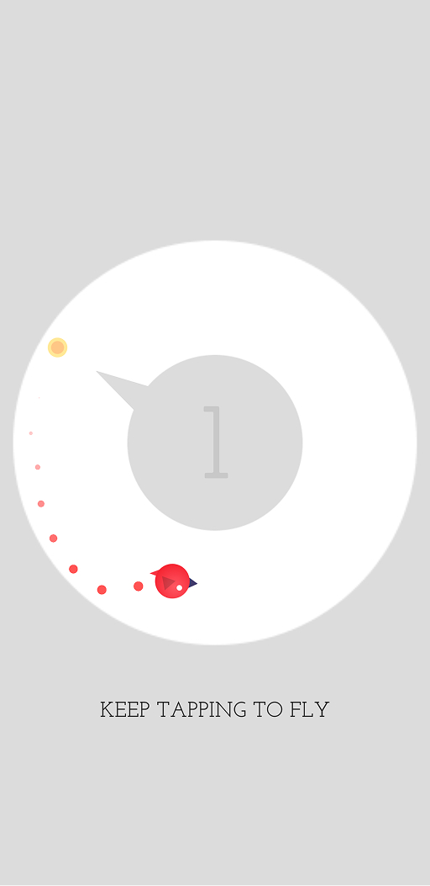
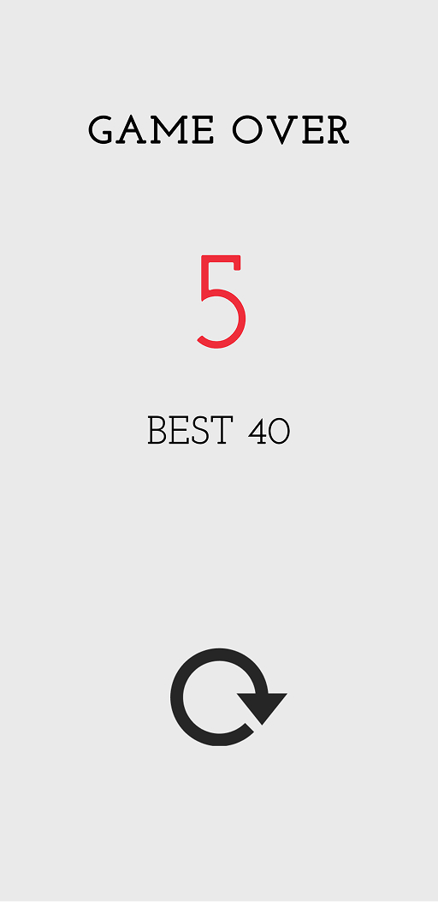
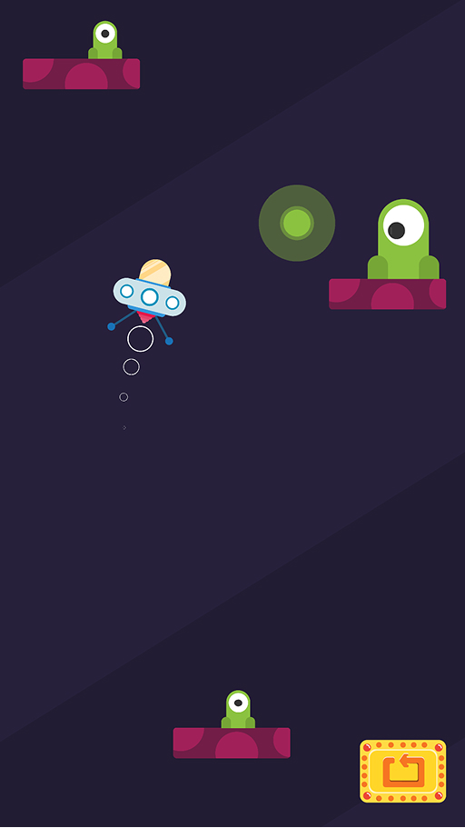
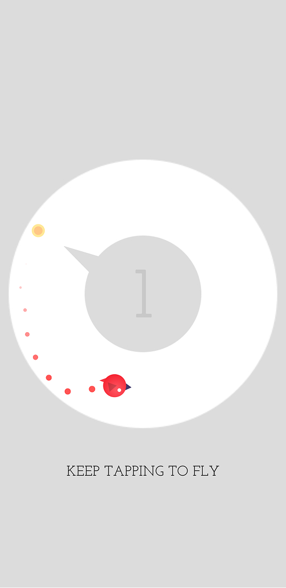
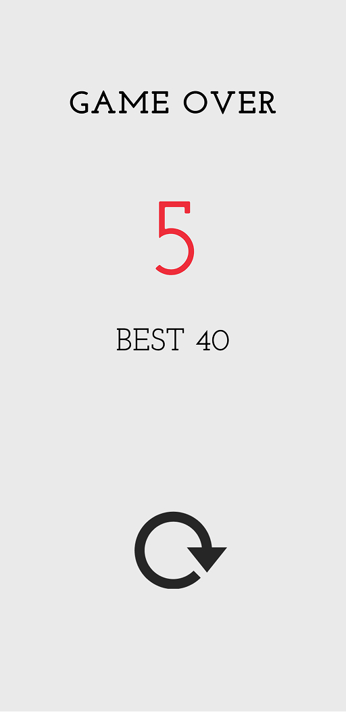
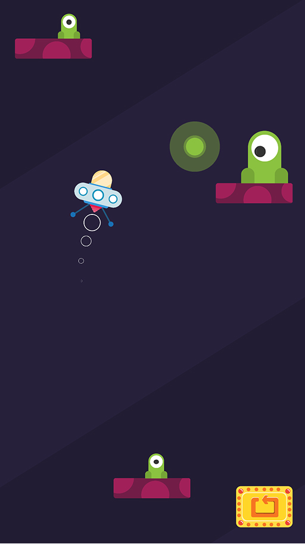